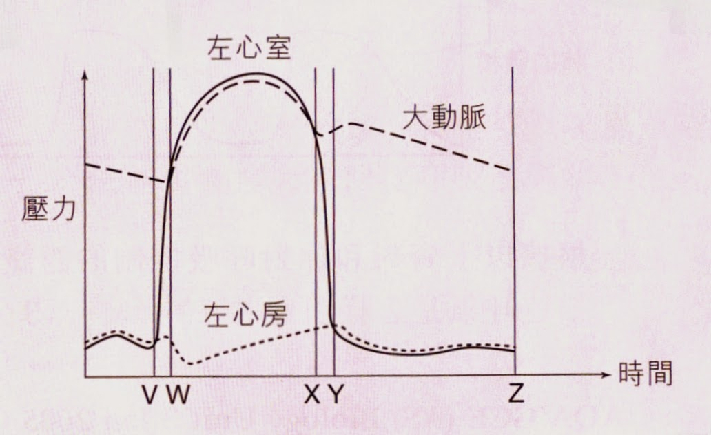

心脏
| 开始→V：心房处于收缩阶段 |
|---|
| - 开始时，心房收缩及血流自静脉流入，因此心房血压上升 - 然后，部份血液流至心室，使心房整体血压下降。 (这时段心室在舒张状态) - 于整个时段，心房血压皆较心室高，因此血液自心房流至心室。 |
| V→W：心室开始收缩; 心房开始舒张 |
| - 开始时，心室剧烈收缩，血压突然上升，直至血压大于大动脉时(W)，血液才能离开 - 心室收缩，但血压还没大于大动脉，血液无法离开; 并因心室收缩的关系，二尖瓣膜及三尖瓣关闭，使心房受压，血压有点上升。 |
| W→X：心室仍在收缩，心房仍在舒张 |
| - 由于心室内的部份血液于W时段后离开往大动脉，心房突然受压减少，因此血压下降，其后因心室仍在收缩及血液自静脉流入，心房血压再上升，直至 Y 点(心室开始舒张) - 心室血压因大量血液流出的关系，血压于WX中段后下降，但血压仍大于大动脉，代表血液仍然由心室流出至大动脉。 |
| X→Y：心室开始舒张 |
| - X后，大动脉的血压较心室高，血液会倒流回心室，使半月瓣关闭，从而导致大动脉的血压有轻微上升。 |
| Y→Z：心室及心房皆呈舒张状态 |
| - 于Y时段开始，心室血压低于心房，因此心房的血液便开始流至心室 ，心房血压下降。 - 中段后，因为血液仍自静脉流入心房，但随即流至心室，因此血压没多大变化。 |
Source: https://faqbiology.blogspot.com/2015/01/blog-post_18.html